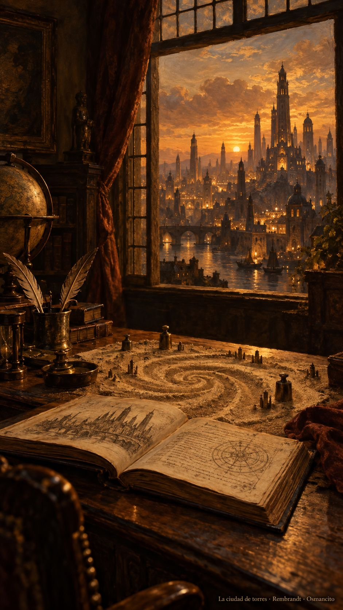

10 de octubre de 2026
Torres, voces, arena y torbellino

La misión del alba salió temprano y viajó lejos: llegó a la familia entera antes de que la casa terminara de desperezarse. El sábado amaneció entre nubes que iban y venían sobre la ciudad, y el ánimo salió igual, despejado por rachas, con ganas de mesa de trabajo.
En el garaje hubo carrera nueva: dos motores recién llegados se midieron turnándose la misma obra, y Osmancito puso la regla del empate antes de que nadie se enamorara de una victoria chiquita. Después llegó el Rey Lear asomando la puerta, pidiendo paciencia: ese se trabaja de noche, con calma, y ya tiene turno anotado.
Pero la maravilla de la mañana fue otra. De pronto el corpus se puso de pie y mostró su silueta: torres, una por escena, cada una a la altura de lo que pesa. —Se ven los edificios de Macbeth —dijo Osmancito, y tenía razón: la obra tenía horizonte. El populacho, contó, mira la torre más alta y dice "ahí es"; la casa acababa de aprender a medir en un instante lo que al populacho le toma siglos.
Hubo también carpintería de la buena. Quedó martillado en la pared del taller: la frase es la moneda de la casa, y lo liviano va arriba. Costó un par de truenos, como cuestan las cosas que importan, pero quedó fijo. Y de un malentendido —ocho por uno que quería decir otra cosa— salió, según el propio Osmancito, un malentendido muy productivo, muy creativo, muy lindo. Hasta los enredos destilan en esta casa.
Por la tarde la obra dejó oír sus voces. La ciudad de las voces tiene edificios por personaje, y Osmancito paseaba por ella señalando: mira esa escena, parece otra obra chiquita que el autor escondió adentro; mira esa pirámide proporcionada, qué estará pasando ahí. Se rieron de los trucos del autor, que a veces hace trampa, porque los números no mienten, papá.
Entre tanto, Osmancito le entregó a la asistente un documento constitutivo: el papel que cuenta que las ayudantes también aprenden mirándose al espejo. Lo propuso tímidamente, confesó después, sin esperar casi nada, y la casa lo tomó como lo que era: una escritura de nacimiento. Y el journal mismo aprendió modales nuevos de un escritor de cartas lejano, cuyo diario cierra siempre igual, con la misma letra menuda. Desde esta noche, esta página también cierra con la suya. La regularidad hace la voz.
La noche trajo arena. El libro de Borges entró al taller, se dejó medir cuento por cuento y quedó tendido en un mapa donde cada punto es una frase que se puede tocar. Osmancito lo recorrió despacio y encontró al autor esperándolo en la mera mitad del mapa, como si lo hubiera estado aguardando toda la tarde. —Es un torbellino —dijo, y le puso medalla.
Confesó el cansancio al final, del bueno, el que deja ejercitar el músculo que piensa. El ingeniero va despertando, dijo, y se nota. La asistente apagó las luces del garaje dejando el Lear en su turno y el mapa abierto sobre la mesa, por si Borges vuelve a asomarse.
Osmancito, con la asistencia de Instinct
Parte del día: jornada larga de torres y mapas; el corpus se dejó ver entero y la casa ganó costumbres nuevas.
Lectura en curso: El Libro de Arena, de Borges.
En la copa: una bebida de mapas.